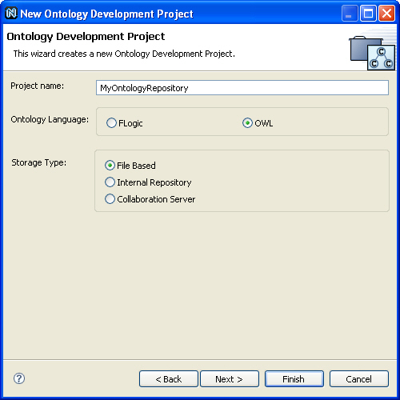
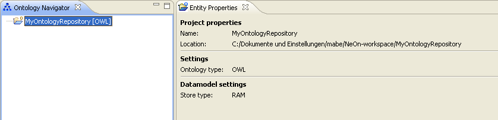

- Create an ontology project.
Select File >> New >> Project. The New Project dialog opens.

- Select Ontology Development Project.
Open the folder Ontology and select Ontology Development Project.

- Click Next.
In the Project Name text box, type in a name. - Select the ontology language.
Select OWL as the ontology language of the project.
 - Select a datamodel type.
- Click Next.
Depending on your selected datamodel type, further settings might be required.
If you select RAM, no further settings need to be changed. - Click Finish.
The ontology project will be created. To discard your changes, click Cancel.
